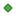

<!doctype html>
<html lang="en">
    <head>
        <meta charset="utf-8">
        <meta http-equiv="X-UA-Compatible" content="IE=edge">
        <meta name="viewport" content="initial-scale=1,user-scalable=no,maximum-scale=1,width=device-width">
        <meta name="mobile-web-app-capable" content="yes">
        <meta name="apple-mobile-web-app-capable" content="yes">
        <link rel="stylesheet" href="css/leaflet.css"><link rel="stylesheet" href="css/L.Control.Locate.min.css">
        <link rel="stylesheet" href="css/qgis2web.css"><link rel="stylesheet" href="css/fontawesome-all.min.css">
        <link rel="stylesheet" href="css/MarkerCluster.css">
        <link rel="stylesheet" href="css/MarkerCluster.Default.css">
        <link rel="stylesheet" href="css/leaflet-control-geocoder.Geocoder.css">
        <link rel="stylesheet" href="css/leaflet-measure.css">
        <style>
        html, body, #map {
            width: 100%;
            height: 100%;
            padding: 0;
            margin: 0;
        }
        </style>
        <title></title>
    </head>
    <body>
        <div id="map">
        </div>
        <script src="js/qgis2web_expressions.js"></script>
        <script src="js/leaflet.js"></script><script src="js/L.Control.Locate.min.js"></script>
        <script src="js/leaflet-svg-shape-markers.min.js"></script>
        <script src="js/leaflet.rotatedMarker.js"></script>
        <script src="js/leaflet.pattern.js"></script>
        <script src="js/leaflet-hash.js"></script>
        <script src="js/Autolinker.min.js"></script>
        <script src="js/rbush.min.js"></script>
        <script src="js/labelgun.min.js"></script>
        <script src="js/labels.js"></script>
        <script src="js/leaflet-control-geocoder.Geocoder.js"></script>
        <script src="js/leaflet-measure.js"></script>
        <script src="js/leaflet.markercluster.js"></script>
        <script src="data/Comuna_1.js"></script>
        <script src="data/Torre_2.js"></script>
        <script src="data/VIAS_3.js"></script>
        <script>
        var map = L.map('map', {
            zoomControl:true, maxZoom:28, minZoom:12
        })
        var hash = new L.Hash(map);
        map.attributionControl.setPrefix('<a href="https://github.com/tomchadwin/qgis2web" target="_blank">qgis2web</a> &middot; <a href="https://leafletjs.com" title="A JS library for interactive maps">Leaflet</a> &middot; <a href="https://qgis.org">QGIS</a>');
        var autolinker = new Autolinker({truncate: {length: 30, location: 'smart'}});
        L.control.locate({locateOptions: {maxZoom: 19}}).addTo(map);
        var measureControl = new L.Control.Measure({
            position: 'topleft',
            primaryLengthUnit: 'feet',
            secondaryLengthUnit: 'miles',
            primaryAreaUnit: 'sqfeet',
            secondaryAreaUnit: 'sqmiles'
        });
        measureControl.addTo(map);
        document.getElementsByClassName('leaflet-control-measure-toggle')[0]
        .innerHTML = '';
        document.getElementsByClassName('leaflet-control-measure-toggle')[0]
        .className += ' fas fa-ruler';
        var bounds_group = new L.featureGroup([]);
        function setBounds() {
            if (bounds_group.getLayers().length) {
                map.fitBounds(bounds_group.getBounds());
            }
        }
        map.createPane('pane_DarkMatter_0');
        map.getPane('pane_DarkMatter_0').style.zIndex = 400;
        var layer_DarkMatter_0 = L.tileLayer('http://a.basemaps.cartocdn.com/dark_all/{z}/{x}/{y}.png', {
            pane: 'pane_DarkMatter_0',
            opacity: 1.0,
            attribution: '<a href="https://cartodb.com/basemaps/">Map tiles by CartoDB, under CC BY 3.0. Data by OpenStreetMap, under ODbL.</a>',
            minZoom: 12,
            maxZoom: 28,
            minNativeZoom: 0,
            maxNativeZoom: 20
        });
        layer_DarkMatter_0;
        map.addLayer(layer_DarkMatter_0);
        function pop_Comuna_1(feature, layer) {
            var popupContent = '<table>\
                    <tr>\
                        <th scope="row">comuna</th>\
                        <td>' + (feature.properties['comuna'] !== null ? autolinker.link(feature.properties['comuna'].toLocaleString()) : '') + '</td>\
                    </tr>\
                    <tr>\
                        <th scope="row">nombre</th>\
                        <td>' + (feature.properties['nombre'] !== null ? autolinker.link(feature.properties['nombre'].toLocaleString()) : '') + '</td>\
                    </tr>\
                    <tr>\
                        <th scope="row">zona_recol</th>\
                        <td>' + (feature.properties['zona_recol'] !== null ? autolinker.link(feature.properties['zona_recol'].toLocaleString()) : '') + '</td>\
                    </tr>\
                    <tr>\
                        <th scope="row">area</th>\
                        <td>' + (feature.properties['area'] !== null ? autolinker.link(feature.properties['area'].toLocaleString()) : '') + '</td>\
                    </tr>\
                    <tr>\
                        <td colspan="2">' + (feature.properties['perimetro'] !== null ? autolinker.link(feature.properties['perimetro'].toLocaleString()) : '') + '</td>\
                    </tr>\
                </table>';
            layer.bindPopup(popupContent, {maxHeight: 400});
        }

        function style_Comuna_1_0() {
            return {
                pane: 'pane_Comuna_1',
                opacity: 1,
                color: 'rgba(228,26,28,1.0)',
                dashArray: '',
                lineCap: 'square',
                lineJoin: 'bevel',
                weight: 4.0,
                fillOpacity: 0,
                interactive: true,
            }
        }
        map.createPane('pane_Comuna_1');
        map.getPane('pane_Comuna_1').style.zIndex = 401;
        map.getPane('pane_Comuna_1').style['mix-blend-mode'] = 'normal';
        var layer_Comuna_1 = new L.geoJson(json_Comuna_1, {
            attribution: '',
            interactive: true,
            dataVar: 'json_Comuna_1',
            layerName: 'layer_Comuna_1',
            pane: 'pane_Comuna_1',
            onEachFeature: pop_Comuna_1,
            style: style_Comuna_1_0,
        });
        bounds_group.addLayer(layer_Comuna_1);
        map.addLayer(layer_Comuna_1);
        function pop_Torre_2(feature, layer) {
            var popupContent = '<table>\
                    <tr>\
                        <td colspan="2">' + (feature.properties['operador'] !== null ? autolinker.link(feature.properties['operador'].toLocaleString()) : '') + '</td>\
                    </tr>\
                    <tr>\
                        <td colspan="2">' + (feature.properties['licencia'] !== null ? autolinker.link(feature.properties['licencia'].toLocaleString()) : '') + '</td>\
                    </tr>\
                    <tr>\
                        <td colspan="2">' + (feature.properties['fecha_exp'] !== null ? autolinker.link(feature.properties['fecha_exp'].toLocaleString()) : '') + '</td>\
                    </tr>\
                    <tr>\
                        <td colspan="2">' + (feature.properties['direccion'] !== null ? autolinker.link(feature.properties['direccion'].toLocaleString()) : '') + '</td>\
                    </tr>\
                    <tr>\
                        <th scope="row">tipo</th>\
                        <td>' + (feature.properties['tipo'] !== null ? autolinker.link(feature.properties['tipo'].toLocaleString()) : '') + '</td>\
                    </tr>\
                    <tr>\
                        <td colspan="2">' + (feature.properties['altura'] !== null ? autolinker.link(feature.properties['altura'].toLocaleString()) : '') + '</td>\
                    </tr>\
                    <tr>\
                        <td colspan="2">' + (feature.properties['estado'] !== null ? autolinker.link(feature.properties['estado'].toLocaleString()) : '') + '</td>\
                    </tr>\
                </table>';
            layer.bindPopup(popupContent, {maxHeight: 400});
        }

        function style_Torre_2_0() {
            return {
                pane: 'pane_Torre_2',
                shape: 'diamond',
                radius: 4.0,
                opacity: 1,
                color: 'rgba(61,128,53,1.0)',
                dashArray: '',
                lineCap: 'butt',
                lineJoin: 'miter',
                weight: 2.0,
                fill: true,
                fillOpacity: 1,
                fillColor: 'rgba(84,176,74,1.0)',
                interactive: true,
            }
        }
        map.createPane('pane_Torre_2');
        map.getPane('pane_Torre_2').style.zIndex = 402;
        map.getPane('pane_Torre_2').style['mix-blend-mode'] = 'normal';
        var layer_Torre_2 = new L.geoJson(json_Torre_2, {
            attribution: '',
            interactive: true,
            dataVar: 'json_Torre_2',
            layerName: 'layer_Torre_2',
            pane: 'pane_Torre_2',
            onEachFeature: pop_Torre_2,
            pointToLayer: function (feature, latlng) {
                var context = {
                    feature: feature,
                    variables: {}
                };
                return L.shapeMarker(latlng, style_Torre_2_0(feature));
            },
        });
        var cluster_Torre_2 = new L.MarkerClusterGroup({showCoverageOnHover: false,
            spiderfyDistanceMultiplier: 2});
        cluster_Torre_2.addLayer(layer_Torre_2);

        bounds_group.addLayer(layer_Torre_2);
        cluster_Torre_2.addTo(map);
        function pop_VIAS_3(feature, layer) {
            var popupContent = '<table>\
                    <tr>\
                        <th scope="row">OBJECTID</th>\
                        <td>' + (feature.properties['OBJECTID'] !== null ? autolinker.link(feature.properties['OBJECTID'].toLocaleString()) : '') + '</td>\
                    </tr>\
                    <tr>\
                        <th scope="row">nom_via</th>\
                        <td>' + (feature.properties['nom_via'] !== null ? autolinker.link(feature.properties['nom_via'].toLocaleString()) : '') + '</td>\
                    </tr>\
                    <tr>\
                        <td colspan="2">' + (feature.properties['tipo_via'] !== null ? autolinker.link(feature.properties['tipo_via'].toLocaleString()) : '') + '</td>\
                    </tr>\
                    <tr>\
                        <td colspan="2">' + (feature.properties['estado_ser'] !== null ? autolinker.link(feature.properties['estado_ser'].toLocaleString()) : '') + '</td>\
                    </tr>\
                    <tr>\
                        <td colspan="2">' + (feature.properties['numero_car'] !== null ? autolinker.link(feature.properties['numero_car'].toLocaleString()) : '') + '</td>\
                    </tr>\
                    <tr>\
                        <td colspan="2">' + (feature.properties['estado_sup'] !== null ? autolinker.link(feature.properties['estado_sup'].toLocaleString()) : '') + '</td>\
                    </tr>\
                    <tr>\
                        <td colspan="2">' + (feature.properties['acceso_via'] !== null ? autolinker.link(feature.properties['acceso_via'].toLocaleString()) : '') + '</td>\
                    </tr>\
                    <tr>\
                        <td colspan="2">' + (feature.properties['SHAPE_Leng'] !== null ? autolinker.link(feature.properties['SHAPE_Leng'].toLocaleString()) : '') + '</td>\
                    </tr>\
                </table>';
            layer.bindPopup(popupContent, {maxHeight: 400});
        }

        function style_VIAS_3_0() {
            return {
                pane: 'pane_VIAS_3',
                opacity: 1,
                color: 'rgba(141,90,153,1.0)',
                dashArray: '',
                lineCap: 'square',
                lineJoin: 'bevel',
                weight: 1.0,
                fillOpacity: 0,
                interactive: true,
            }
        }
        map.createPane('pane_VIAS_3');
        map.getPane('pane_VIAS_3').style.zIndex = 403;
        map.getPane('pane_VIAS_3').style['mix-blend-mode'] = 'normal';
        var layer_VIAS_3 = new L.geoJson(json_VIAS_3, {
            attribution: '',
            interactive: true,
            dataVar: 'json_VIAS_3',
            layerName: 'layer_VIAS_3',
            pane: 'pane_VIAS_3',
            onEachFeature: pop_VIAS_3,
            style: style_VIAS_3_0,
        });
        bounds_group.addLayer(layer_VIAS_3);
        map.addLayer(layer_VIAS_3);
        var osmGeocoder = new L.Control.Geocoder({
            collapsed: true,
            position: 'topleft',
            text: 'Search',
            title: 'Testing'
        }).addTo(map);
        document.getElementsByClassName('leaflet-control-geocoder-icon')[0]
        .className += ' fa fa-search';
        document.getElementsByClassName('leaflet-control-geocoder-icon')[0]
        .title += 'Search for a place';
        var baseMaps = {};
        L.control.layers(baseMaps,{' VIAS': layer_VIAS_3,' Torre': cluster_Torre_2,' Comuna': layer_Comuna_1,"Dark Matter": layer_DarkMatter_0,},{collapsed:false}).addTo(map);
        setBounds();
        </script>
    </body>
</html>
